Understanding Muon: Better States, Not Better Steps
What Muon’s singular modes reveal about curvature and future optimization
TL;DR: Muon does not simply take better immediate steps. It moves the model into parameter states from which future optimization behaves differently. That effect depends on how Muon weights the singular modes of its momentum signal. Those singular modes are geometrically different: their curvature and gradient alignment vary systematically with singular value, and that relationship is strongly shaped by matrix aspect ratio.
Technical summary
1. Short optimizer interventions can change the downstream optimization trajectory.
When we fork an AdamW run and switch one branch to Muon, Muon often loses ground before eventually pulling ahead. More importantly, only a few Muon steps can leave parameter values from which later AdamW optimization behaves better, including after the optimizer state is reset.
We see the same kind of continuation effect when we perturb Muon’s spectral weighting. For
\[ D_p = U\Sigma^pV^\top, \]
different values of \(p\) produce systematic downstream loss profiles. Their ranking depends both on the parameter state where the intervention is made and on how many later optimization steps we use to judge it.
2. Muon’s singular modes have strongly structured local curvature.
Writing the momentum signal as
\[ M = \sum_i \sigma_i D_i, \]
we find a clear relationship between singular value and curvature along the corresponding mode. Modes with larger \(\sigma_i\) tend to have larger curvature magnitude. This relationship becomes especially clean as the matrix becomes more rectangular, where it approaches an approximately quadratic scaling.
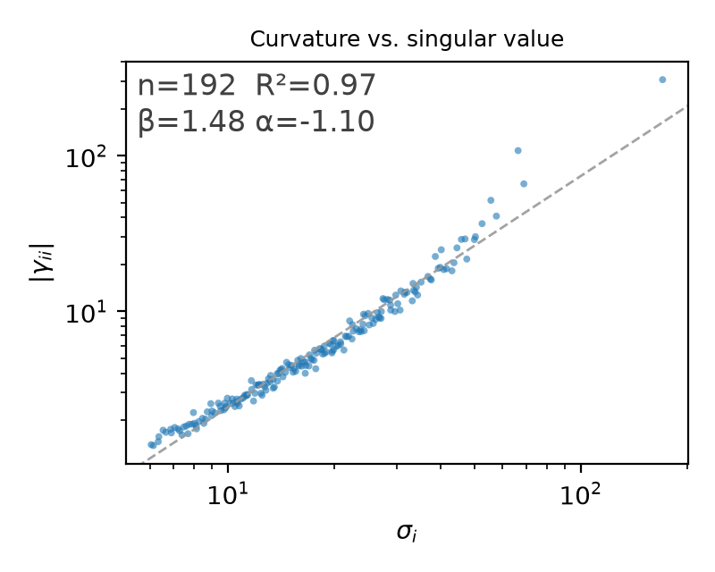
3. The Hessian response separates into a structured component and a noise-like residual.
For each singular mode, we write
\[ H[D_i] = \sum_j \gamma_{ji} D_j + \alpha_i Q_i. \]
The normalized coupling between different singular modes is small away from initialization, while \(\alpha_i\) grows systematically with \(\sigma_i\). The residual directions \(Q_i\) carry much weaker and noisier held-out gradient alignment than the singular modes \(D_i\), while their curvature is often much larger than the curvature along the singular modes themselves. This is consistent with treating the residual component as noise-like relative to the structured singular-mode basis.
This motivates the approximate picture
\[ H[D_i] = \sum_j \gamma_{ji}D_j + \varepsilon_i, \qquad \varepsilon_i = \alpha_i Q_i, \]
where \(\varepsilon_i\) is a noise-like residual with substantial high-curvature content.
Introduction
Muon can converge substantially faster than AdamW in language-model training, but it is still not clear why. Its defining operation is surprisingly simple. For each matrix-valued update, Muon keeps the singular modes of the momentum signal and replaces its singular values with equal weights. Why should flattening the spectrum help optimization?
We study this question using deliberately small transformers, where controlled optimizer interventions and direct measurements of local geometry are affordable. The goal is not to benchmark large-scale language-model training. It is to make the optimization dynamics simple enough to inspect directly.
The experiments below approach the question from two sides. We first intervene on the optimizer and ask how short changes in the update rule affect future optimization. We then look inside Muon’s singular modes and measure the local curvature and gradient structure that the spectral update is acting on. The full experimental setup appears in Section 4.
The code and experiment configurations for this study are available at this repository, with the configurations for each experiment under experiments/. The only exception is the large aspect-ratio sweep in Section 7, which was run in a separate repository.
Muon’s advantage is delayed
A simple way to ask why Muon helps is to switch optimizers in the middle of training. We start from an AdamW checkpoint and create two identical branches. One continues with AdamW. The other switches its 2D weight matrices to Muon. Both branches see exactly the same sequence of training batches.
If Muon were better because each of its steps reduced the loss more, the Muon branch should improve immediately. That is not what happens.
We repeat this experiment from AdamW checkpoints at steps 100, 200, 500, 1000, 2000, 4000, 6000, and 8000. Figure 2 plots Muon’s validation loss minus AdamW’s validation loss after each fork. Positive values mean that Muon is doing worse. Negative values mean that Muon has pulled ahead.
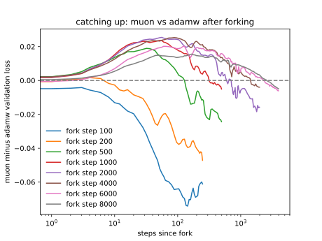
At most fork points, Muon first falls behind. It then recovers and eventually overtakes AdamW. We call the number of steps required to return to zero the catch-up length.
This is the first important result. Switching to Muon can make the model worse for hundreds of steps before it makes it better. If Muon won because each individual step reduced the loss more, this should not happen. The Muon branch should improve as soon as the optimizer is switched.
The delay is already substantial before the learning-rate decay begins. After 1000 AdamW steps, Muon needs about 320 steps to catch up, and after 2000 steps it needs about 608. At still later forks the catch-up length becomes even larger, although those comparisons are also affected by the decaying learning rate.
We will use the term continuation value for this delayed effect. The continuation value of an update is the effect it has on the parameter state seen by later optimization steps. An update can therefore look bad immediately and still have high continuation value if it leaves the model in a state from which subsequent optimization is more effective.
The catch-up curves suggest that Muon’s advantage is largely about continuation value. Muon appears to move the parameters toward states from which future optimization is more effective. But there is an important alternative explanation. Perhaps those states are only useful if Muon keeps optimizing them. Or perhaps the effect lives in Muon’s optimizer state rather than in the parameters themselves. The next experiment separates these possibilities.
Does Muon leave better parameter states?
The catch-up experiment suggests that Muon creates states with better continuation value, but it does not yet tell us what carries that advantage. There are two obvious alternatives. First, the state might only be useful if Muon continues to optimize it. Second, the advantage might live in the optimizer state, such as the accumulated momentum, rather than in the parameter values.
We test both possibilities at once. Starting from AdamW checkpoints at steps 200, 500, and 1000, we let one branch take 1, 4, or 16 Muon steps. We then switch that branch back to AdamW and compare its continuation with the branch that stayed on AdamW.
We run the switch-back in two ways. In the first, both branches keep their accumulated optimizer state. In the second, we reset the optimizer state to zero before continuing with AdamW, followed by a 10-step warmup. If the advantage disappears after switching back to AdamW, then it was specific to continued Muon updates. If it survives the switch but disappears after the reset, then it was carried by the optimizer state. If it survives both, then the parameter values themselves carry at least part of the effect.
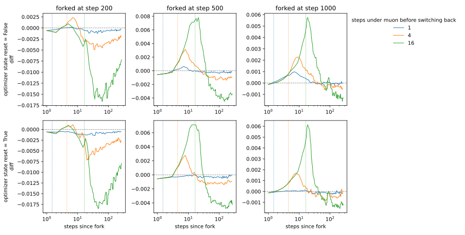
The result is the strongest evidence so far for the parameter-state view. The Muon branch can still produce a better AdamW continuation after the switch. More importantly, the qualitative effect remains when the optimizer state is reset. The advantage is therefore not explained only by Muon’s accumulated momentum or by continued Muon updates. At least part of it is carried by the parameter values that the Muon steps produced.
What we know so far
At this point we know two things. First, Muon’s advantage is not purely immediate. A switch to Muon can hurt at first and pay off only after many later steps. Second, some of that delayed advantage survives both a switch back to AdamW and a reset of optimizer state. This points to a difference in the parameter values themselves.
That gives us a more focused question: what part of Muon’s update creates these higher-continuation-value states? Muon is defined by how it reweights the singular values of its momentum signal. We will perturb that weighting directly. Before doing so, we briefly describe the controlled experimental setup used throughout.
Experimental setup
All experiments use a deliberately small transformer so that we can afford many controlled forks and direct measurements of local geometry. The model is trained for next-token prediction on FineWeb. It has one transformer block, a residual width of 192, 3 attention heads of width 64, a 500-token byte-level BPE vocabulary, and about 637,000 parameters.
The architecture is a scaled-down version of the one used in the nanogpt speedruns. It uses pre-norm RMSNorm, QK-norm, half-truncated RoPE, a \(\text{ReLU}^2\) MLP, and output logit softcapping. Training uses bf16 with a global batch of 32768 tokens and a fixed validation slice of about 2 million tokens. The learning rate stays constant for the first 30 percent of training and then decays linearly to zero.
The optimizer comparison is intentionally narrow. The token embedding, output projection, and 1D parameters always use AdamW. Only the 2D attention and MLP weight matrices switch between AdamW, Muon, and the Muon variants studied later. On these 2D weights, AdamW and Muon use the same momentum coefficients,
\[ (\beta_1,\beta_2)=(0.9,0.95), \]
and Muon’s optional Nesterov step is disabled. This keeps the momentum signal fixed across the comparison and changes only how that signal is transformed into an update.
For the 2D weights, Muon replaces AdamW’s elementwise normalized direction with the polar factor of the same momentum signal, computed using Newton-Schulz iterations. We also use Muon’s usual aspect-ratio correction,
\[ \sqrt{\max(1,r/c)}, \]
where \(r\) and \(c\) are the output and input dimensions of the matrix. All other parameter groups, the data order, the training schedule, and the random seed are held fixed. Weight decay is applied independently of the learning rate. This is intentional: because AdamW and Muon use different tuned learning rates, coupling weight decay to the learning rate would also change the effective regularization strength between the two optimizers.
Learning-rate calibration
Before the main comparisons, we tune the 2D-weight learning rate separately for AdamW and Muon while keeping everything else fixed. For Muon, we sweep learning rates in \(\{0.005, 0.01, 0.02, 0.04, 0.08\}\) for 8000 steps. For AdamW, we sweep \(\{0.00075, 0.0015, 0.003, 0.006, 0.012\}\) for 12000 steps.
The best values in these sweeps are 0.02 for Muon and 0.003 for AdamW, and we use those values throughout the rest of the post. The sweep uses one seed per value, so its purpose is only to avoid an obviously poor learning-rate choice, not to estimate either optimizer’s precise optimum.
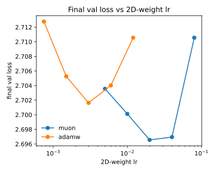
One caveat is important. The 8000-step Muon run is not converged. Its validation loss continues to improve from 2.731 at 4000 steps to 2.697 at 8000 steps and 2.672 at 16000 steps. We therefore use 8000 steps as a convenient point for studying active optimization dynamics, not as a claim about either optimizer’s converged performance.
Which singular modes create better future states?
Muon gets its update direction by changing how the singular modes of its momentum signal are weighted. The previous section suggests that this choice can create parameter states with different continuation value. We now ask a more specific question: which parts of that spectral weighting are responsible?
Write the momentum signal as
\[ M = U\Sigma V^\top. \]
Muon keeps the singular vectors but replaces the singular values with equal weights. Its update direction is therefore
\[ D_0 = UV^\top. \]
A simple way to perturb this choice is to consider the broader family
\[ D_p = U\Sigma^pV^\top. \]
The exponent \(p\) controls which parts of the singular spectrum receive more weight:
- \(p=1\) preserves the original relative singular-value weighting.
- \(p=0\) gives Muon’s polar direction.
- \(p<0\) puts more relative weight on smaller singular values.
- \(p>0\) puts more relative weight on larger singular values.
This gives us a controlled way to move away from Muon while keeping its singular vectors fixed.
We fork Muon’s tuned run at steps 10, 100, 500, 2000, and 4000. At each fork, we compare plain Muon with exact-SVD variants using \(p=-0.25\), \(p=0\), and \(p=+0.25\). Each variant follows its own update rule for 1, 4, or 16 steps. We then reunite every branch under plain Muon and continue training for several hundred more steps.
This lets us ask two different questions. Which spectral weighting looks better during the intervention itself? And which weighting leaves a parameter state with better continuation value after every branch returns to the same optimizer?
Changing \(p\) changes both the shape and the magnitude of the update. A difference in magnitude alone could therefore create a loss difference without telling us much about spectral weighting.
To reduce this effect, we rescale each variant to approximately match Muon’s functional movement. We measure that movement using the token-mean KL divergence between the model’s output distributions before and after the update. The calibration is done separately for each 2D weight matrix.
This does not make every possible notion of step size identical across the branches. Its purpose is narrower: to keep update magnitude from dominating the comparison, so that the main difference is how the singular modes are weighted.
The ranking depends on the continuation horizon
The main result is simple: there is no single ranking of these spectral powers. Which one looks best depends both on where in training we intervene and on how many later optimization steps we use to judge the result.
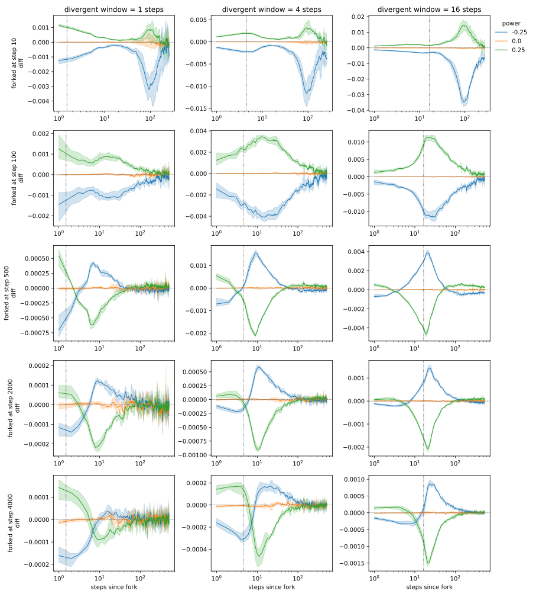
Each panel shows the validation-loss difference relative to the plain Muon branch. Negative values are better. The vertical dotted line marks reunification, after which every branch uses the same plain Muon update.
The exact-SVD \(p=0\) branch tracks regular Newton-Schulz Muon almost perfectly. This is a useful sanity check. The interesting behavior comes from changing the singular-value weighting, not from replacing Newton-Schulz with an exact SVD.
Early in training, smaller \(p\) works better. At fork steps 10 and 100, \(p=-0.25\) produces the better continuation, while \(p=+0.25\) produces the worse one. Later in training, the ordering near reunification reverses. From fork step 500 onward, \(p=+0.25\) is initially better and \(p=-0.25\) is initially worse. These later differences are smaller and tend to fade under continued training.
More importantly, the ranking can change with the continuation horizon itself. Consider the fork at step 10 with a 16-step intervention. At reunification, the \(p=-0.25\) branch is only about 0.003 lower in validation loss than plain Muon. After all branches have used the same Muon update for about 80 more steps, the gap has grown to about 0.035.
Nothing about the update rule differs during those 80 steps. The difference was created during the short intervention and then amplified by common future optimization. This is exactly the kind of continuation-value effect we saw in the AdamW-to-Muon experiments.
The same qualitative effect remains when we reset the optimizer state at reunification. In that version, the delayed gap is slightly smaller, but it still grows substantially under the common Muon continuation. This again points to a difference carried by the parameter values themselves. The reset result is shown here.
The sign pattern is also consistent within this experiment. The early forks favor \(p=-0.25\) over \(p=+0.25\), while the later forks show the opposite ordering near reunification. We therefore treat this as a recurring pattern in these runs, not as evidence that any fixed schedule for \(p\) is universally optimal.
We also checked whether the late-training ordering depends on reaching the fork through plain Muon. Starting from the step-2000 checkpoint, we first train for 64 steps with \(p=+0.25\) and then repeat the same short intervention and reunification experiment. The same qualitative ordering remains: \(p=+0.25\) ends up ahead of \(p=0\) under the shared Muon continuation, while \(p=-0.25\) ends up behind. This suggests that the late-training pattern is not specific to arriving at the fork along a pure-Muon trajectory.
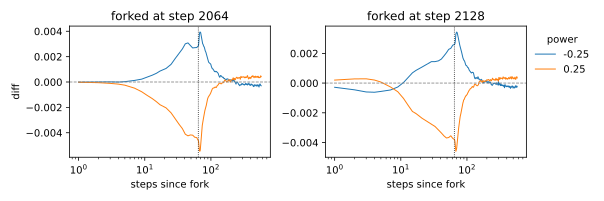
These experiments do not yet tell us how to choose the best \(p\). They show something more basic: the useful weighting of the singular spectrum depends on the parameter state and on the continuation horizon.
Related work such as DynMuon also varies \(p\) over training, although under a different experimental setup and without our KL-based calibration. Here we use \(p\) mainly as a probe. The next question is why changing the spectral weighting changes continuation value at all.
To answer that, we now look directly at the local geometry of Muon’s singular modes.
Geometry of singular modes
The power experiments leave us with one concrete question: what distinguishes a singular mode with a large \(\sigma_i\) from one with a small \(\sigma_i\)?
Muon keeps the singular modes of its momentum signal and changes only how strongly those directions are weighted. If different parts of the spectrum have systematically different local geometry, then changing the power \(p\) is not an arbitrary reweighting. It changes how much update weight is assigned to directions with different curvature and different gradient support.
This section measures that local geometry. We focus only on a short neighborhood around the current parameters. We are not trying to describe the global loss landscape or the geometry of the entire training trajectory.
For a weight matrix \(W\) and a small perturbation \(\Delta W\), the local change in loss is approximately
\[ L(W + \Delta W) \approx L(W) + \langle G, \Delta W\rangle + \frac{1}{2}\langle \Delta W, H[\Delta W]\rangle, \]
where \(G = \nabla_W L\) is the gradient and \(H[\cdot]\) is the Hessian applied as a linear operator.
Muon starts from a momentum signal \(M\). Write its SVD as
\[ M = \sum_i \sigma_i D_i, \qquad D_i = u_i v_i^\top. \]
Each \(D_i\) is a unit-Frobenius-norm rank-1 direction. These are exactly the directions preserved by Muon and reweighted by the power family \(U\Sigma^pV^\top\).
So we will ask three simple questions:
- Curvature: do large-\(\sigma_i\) modes have different curvature from small-\(\sigma_i\) modes?
- Coupling: do different singular modes interact strongly with one another under the Hessian?
- Gradient support: which singular modes are actually aligned with a gradient estimated on held-out data?
We will introduce the additional notation for each question only when we need it.
Profiling setup
We profile two representative 2D weight matrices along the Muon trajectory from Section 4:
- the attention value-projection matrix;
- the MLP up-projection matrix.
At each profiled step, \(D_i\) and \(\sigma_i\) come from the SVD of Muon’s momentum signal on the actual training batch used at that step.
The geometry is measured separately. We use independently sampled held-out validation examples to estimate the Hessian and gradient quantities below. The data used to define the SVD basis is therefore separate from the data used to probe that basis.
We never materialize the full Hessian. Whenever we need \(H[D_i]\) or \(H[Q_i]\), we compute the corresponding Hessian-vector product directly using automatic differentiation. This lets us probe the curvature along specific directions without constructing the full Hessian matrix.
We use anchor checkpoints at steps 0, 1, 10, 100, 500, 2000, and 6000. Around most anchors, we also profile a short sequence of nearby Muon steps. These nearby measurements are useful for reducing noise in the held-out gradient estimates later in this section. The main curvature scatter plots and heatmaps use the anchor checkpoint itself.
Curvature along singular modes
Start with one singular mode \(D_j\). Applying the Hessian to it gives another matrix, which we decompose into a part inside the span of the singular modes and a residual part outside that span:
\[ H[D_j] = \sum_i \gamma_{ij} D_i + \alpha_j Q_j. \]
Here
\[ \gamma_{ij} = \langle D_i, H[D_j]\rangle, \]
and \(Q_j\) is a unit-Frobenius-norm direction orthogonal to every \(D_i\). The scalar \(\alpha_j\) is the size of the residual component.
Conditioned on the current weights, we will think of \(Q_j\) as a noise direction relative to the singular-mode basis. The first term above is the part of the Hessian response that remains inside the structured basis defined by the update signal. The term \(\alpha_j Q_j\) is the residual that escapes that basis.
There is a useful limiting case that motivates this interpretation. Suppose the singular modes came from the exact gradient itself, so that
\[ G = \sum_i \sigma_i D_i. \]
Then \(G\) lies entirely inside the span of the \(D_i\). Since \(Q_j\) is orthogonal to every \(D_i\), we would have
\[ \langle Q_j, G\rangle = 0 \]
by construction.
Muon does not use the exact gradient. Its basis comes from a stochastic momentum signal, so this orthogonality to the gradient no longer has to hold exactly. Later we measure \(\langle Q_j, G\rangle\) directly. This lets us test whether the residual direction still behaves like noise with respect to the gradient signal.
Three quantities will be useful:
- \(\gamma_{jj}\) is the curvature along the singular mode \(D_j\) itself;
- \(\alpha_j\) measures the size of the part of \(H[D_j]\) that leaves the span of the singular modes;
- \(\gamma^\perp_{jj} = \langle Q_j, H[Q_j]\rangle\) is the curvature along the residual direction \(Q_j\).
Before comparing these quantities across training, we make one practical check. Later, when estimating held-out gradient alignment, we will pool several nearby steps to reduce noise. That is only useful if the relevant distributions do not change too much inside such a short window.
Figure 7 and Figure 8 show this check. Each row corresponds to one anchor window. Within a panel, each colored curve is the empirical cumulative distribution at a different step after that anchor. If the curves largely overlap, the distribution is stable over that window.
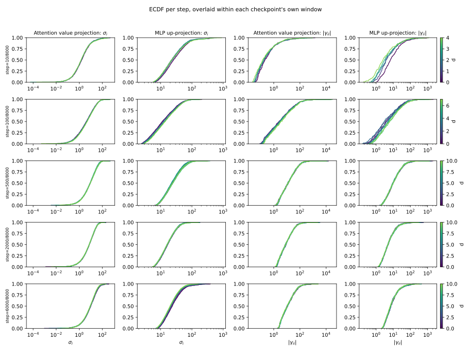
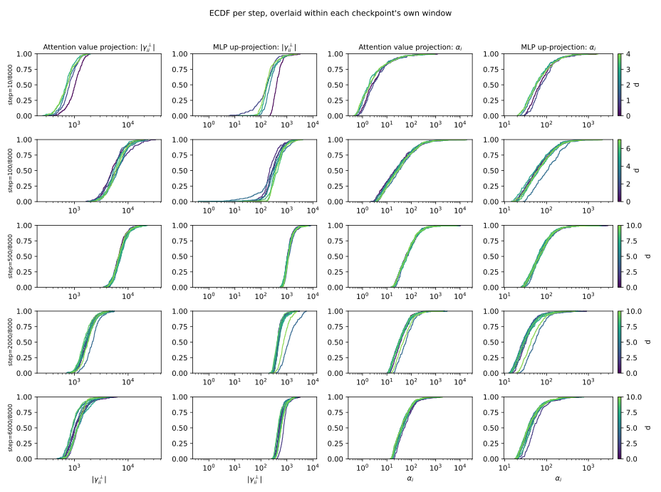
The distributions broadly overlap within the later profiling windows. \(\sigma_i\) and \(|\gamma_{ii}|\) are especially stable. \(\alpha_i\) and \(|\gamma^\perp_{ii}|\) move somewhat more, but the short windows still look similar enough for the limited use we make of pooling.
We therefore pool nearby steps when estimating held-out gradient alignment, where reducing sampling noise is important. The curvature scatter plots and heatmaps below do not rely on this pooling. They use the anchor checkpoint itself.
Result 1: larger singular modes are systematically more curved.
Figure 9 and Figure 10 show the relationship directly. Each figure corresponds to one weight matrix. The columns are checkpoints at steps 0, 10, 100, and 2000. The rows show \(|\gamma_{ii}|\), \(\alpha_i\), and \(|\gamma^\perp_{ii}|\) against \(\sigma_i\).
Each point is one singular mode. Each panel also shows a log-log power-law fit
\[ y \propto \sigma_i^\beta. \]
For quantities whose magnitude is plotted, color preserves the sign of the original value. Red points correspond to negative values. This is especially important for \(\gamma_{ii}\): although the vertical axis shows \(|\gamma_{ii}|\), a red point means that the actual curvature \(\gamma_{ii}\) is negative.
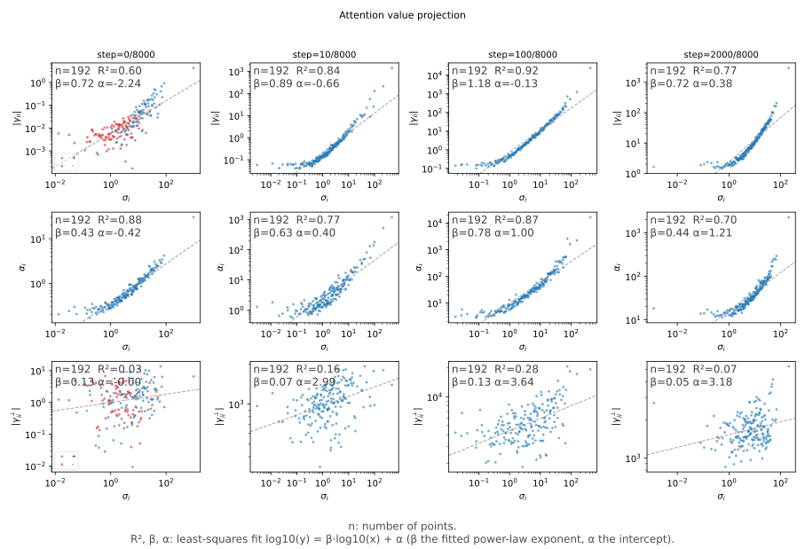
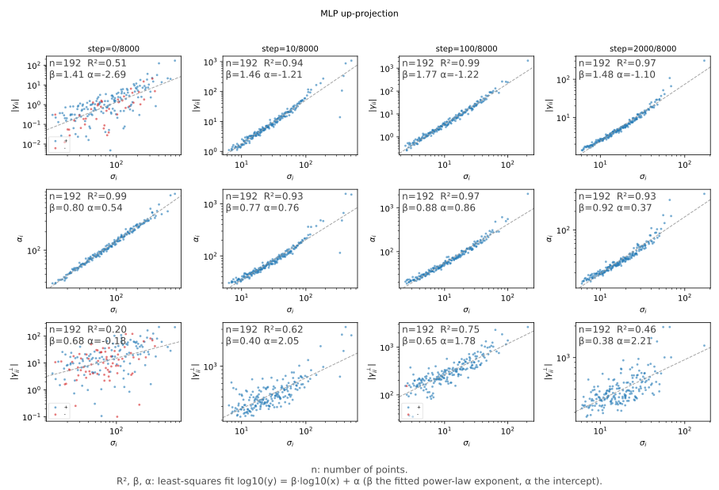
The clearest pattern is in the top row. Modes with larger \(\sigma_i\) have larger curvature magnitude \(|\gamma_{ii}|\).
For the attention value-projection matrix, the fitted exponent \(\beta\) ranges from about 0.72 to 1.18 across the four checkpoints shown. For the MLP up-projection matrix, the relationship is steeper, with \(\beta\) between about 1.41 and 1.77. After the first few steps, the MLP relationship is also extremely tight, with \(R^2\) between 0.94 and 0.99 from step 10 onward.
Step 0 is qualitatively different. At initialization, 53% of the attention modes and 21% of the MLP modes have negative \(\gamma_{ii}\). From step 10 onward, none of the profiled modes in either matrix have negative curvature.
The residual size \(\alpha_i\) also increases with \(\sigma_i\), especially cleanly for the MLP matrix. So larger singular modes produce larger Hessian-vector-product components outside the singular-mode span.
The residual directions themselves live at a very different curvature scale. Their curvature magnitude \(|\gamma^\perp_{ii}|\) is often much larger than the curvature along the singular modes \(D_i\). At the same time, this residual curvature is much less systematically ordered by \(\sigma_i\) than \(\gamma_{ii}\) is.
This gives the residual term a useful interpretation. As \(\sigma_i\) grows, more of \(H[D_i]\) can be sent outside the structured singular-mode span through \(\alpha_i Q_i\). The direction it is sent into is typically highly curved, but that curvature does not follow the same clean spectral organization as the curvature along \(D_i\).
The four checkpoints above are a compact subset of the full sweep. The remaining checkpoints are shown in the complete set of pages.
Cross-mode curvature coupling is weak
So far we have looked only at the diagonal term \(\gamma_{ii}\), which measures curvature along one singular mode at a time. That does not tell us whether different singular modes interact strongly under the Hessian.
For \(i \ne j\),
\[ \gamma_{ij} = \langle D_i, H[D_j]\rangle \]
measures how much applying the Hessian to \(D_j\) produces a component along \(D_i\). To compare this coupling across modes with very different curvature scales, we normalize it as
\[ \frac{\gamma_{ij}} {\sqrt{|\gamma_{ii}\gamma_{jj}|}}. \]
Off-diagonal values near zero mean that the singular modes are only weakly coupled to one another inside their shared span.
There is a second kind of interaction. Each \(D_i\) has a residual direction \(Q_i\) outside the singular-mode span. We measure whether different modes point toward similar residual directions using
\[ \eta^\perp_{ij} = \langle Q_i, Q_j\rangle. \]
Again, off-diagonal values near zero mean weak overlap.
In Figure 11, columns are checkpoints at steps 0, 10, 100, and 2000. The first two rows show the normalized \(\gamma\) coupling and residual-direction overlap for the attention matrix. The last two rows show the same quantities for the MLP matrix.
Result 2: away from initialization, both forms of cross-mode interaction are small.
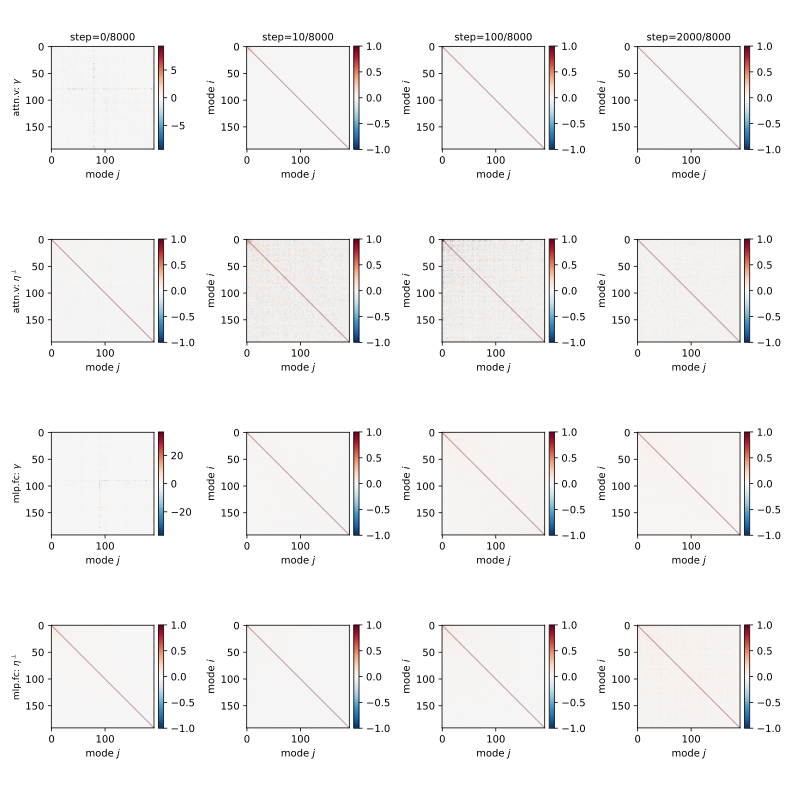
At step 0, the median absolute off-diagonal normalized coupling is about 0.09 for the attention matrix and 0.15 for the MLP matrix. By steps 10, 100, and 2000, it is much smaller: about 0.007 to 0.008 for the attention matrix and 0.014 to 0.022 for the MLP matrix.
The residual directions are also weakly aligned with one another. The median absolute off-diagonal \(\eta^\perp_{ij}\) remains small across the checkpoints shown.
So after the earliest stage of training, the Hessian is close to diagonal within the span of the singular modes. Different \(D_i\) modes interact only weakly with one another there.
This does not mean that the \(D_i\) form a Hessian eigenbasis. The residual term \(\alpha_i Q_i\) can still carry part of \(H[D_i]\) outside their shared span. The result is narrower: inside the singular-mode span, cross-mode coupling is small.
The remaining checkpoints are shown in the complete set of heatmap pages.
Larger singular modes also carry more held-out gradient signal
Curvature alone does not tell us whether a direction matters for optimization. A mode could be highly curved while the gradient barely points along it.
We therefore measure gradient alignment using data that is separate from the training batch that defined the SVD basis. Let \(\bar{G}\) denote the gradient estimated from the held-out profiling examples. For each singular mode, define
\[ \phi_i = \langle D_i, \bar{G}\rangle. \]
This measures how strongly the held-out gradient points along \(D_i\).
We also measure the gradient along the residual direction \(Q_i\):
\[ \phi^\perp_i = \langle Q_i, \bar{G}\rangle. \]
This measurement directly tests the noise interpretation above. If the singular basis came from the exact gradient, then \(\phi^\perp_i\) would be zero by construction. Because Muon’s basis comes from a stochastic momentum signal instead, it need not vanish. The question is whether the residual directions still carry meaningful gradient signal in practice.
These gradient measurements are substantially noisier than the curvature measurements above. The reason is simple: \(\phi_i\) and \(\phi^\perp_i\) are estimated from stochastic per-example gradients on a finite held-out sample. Their values can therefore fluctuate considerably even when the underlying local geometry changes only slightly.
To reduce this sampling noise, we first average the per-example projections within each profiling batch. We then pool those per-step mode averages across the short profiling window around each anchor. The window-stability check above is what makes this second averaging step reasonable.
To measure how alignment changes across the spectrum, each panel fits
\[ |\phi_i| \propto \sigma_i^\beta \]
or the corresponding relationship for \(|\phi^\perp_i|\).
The figure then divides out that fitted dependence and plots the signed ratio against \(\sigma_i\). This makes any remaining trend easier to see. The fitted \(\beta\) and \(R^2\) are reported inside each panel. The scatter is downsampled, the horizontal positions are slightly jittered, and extreme displayed ratios are clipped for readability. These display operations do not affect the fitted values.
Result 3: the held-out gradient aligns with the singular modes, while the residual directions carry little systematic gradient signal.

The gradient result is visibly noisier than the curvature result, but its broad trend is consistent. For the singular modes themselves, the fitted exponent is positive at every checkpoint shown. For the attention matrix, \(\beta\) ranges from about 0.43 to 0.98. For the MLP matrix, it stays close to 1, from about 0.90 to 1.10.
The strength of the fit varies considerably across checkpoints. This is different from the very tight curvature relationship seen for the MLP matrix. We therefore do not interpret \(|\phi_i|\) as following a precise power law mode by mode. The more modest claim is that, after averaging over the held-out gradient samples and nearby profiling steps, larger-\(\sigma_i\) modes systematically tend to carry more held-out gradient signal.
The residual directions behave very differently. Their held-out gradient alignment has much lower signal-to-noise than along the singular modes, and shows little systematic organization across the singular spectrum. For \(|\phi^\perp_i|\), the fitted dependence on \(\sigma_i\) explains very little of the variation. Across the checkpoints shown, \(R^2\) is at most 0.04 for the attention matrix and 0.10 for the MLP matrix.
This is consistent with the noise interpretation introduced above. The \(D_i\) modes carry structured gradient signal, and larger-\(\sigma_i\) modes tend to carry more of it. The residual directions \(Q_i\) carry much weaker and noisier gradient signal than the singular modes \(D_i\). Yet, as we saw from \(\gamma^\perp_{ii}\), those same residual directions can have very large curvature.
The main geometric measurements can therefore be summarized as follows:
- Curvature along \(D_i\) grows strongly and systematically with \(\sigma_i\).
- The residual size \(\alpha_i\) also grows with \(\sigma_i\).
- Cross-mode coupling \(\gamma_{ij}\) for \(i \ne j\) is small away from initialization.
- Different residual directions \(Q_i\) are only weakly aligned with one another.
- The held-out gradient has structured alignment with the \(D_i\) modes, but little alignment with the residual directions \(Q_i\).
- The residual directions often live at a much higher curvature scale than the singular modes themselves, even though that curvature is much less systematically organized by \(\sigma_i\).
The resulting picture is fairly simple. Conditioned on the current weights, the singular-mode basis contains a structured part of the local Hessian response. Different \(D_i\) modes are only weakly coupled to one another inside that span, and their curvature is strongly organized by \(\sigma_i\).
The remaining component \(\alpha_i Q_i\) looks different. It leaves the singular-mode span, has little systematic alignment with the held-out gradient, and often points toward much higher-curvature directions. This motivates thinking of it as a noise-like component of the Hessian response.
At a coarse level, we can therefore think of
\[ H[D_i] = \sum_j \gamma_{ji}D_j + \varepsilon_i, \]
where
\[ \varepsilon_i = \alpha_iQ_i \]
is a high-curvature residual whose direction is only weakly tied to the gradient signal.
This matters for the power family \(U\Sigma^pV^\top\). Changing \(p\) does more than reshape an arbitrary spectrum. It changes how much update weight is assigned to modes with systematically different curvature and gradient support. Positive \(p\) puts relatively more weight on large-\(\sigma_i\) modes. Negative \(p\) shifts relative weight toward small-\(\sigma_i\) modes. The geometry therefore gives us a concrete reason to expect different values of \(p\) to produce different optimization trajectories.
What these measurements do not yet give us is a rule for choosing \(p\). The geometry measured here is local and mostly static, while the power experiments measure continuation value many optimization steps into the future. Connecting the two requires a dynamical model of how gradient signal evolves across these modes during training. For now, the geometry tells us what differs across the spectrum. It does not yet tell us how to compute the best spectral weighting.
The remaining checkpoints are shown in the complete set of gradient-alignment pages.
Aspect ratio organizes the curvature law
The two matrices profiled above show noticeably different relationships between singular value and curvature. For the square attention value-projection matrix, the relationship between \(\sigma_i\) and \(|\gamma_{ii}|\) is relatively shallow and noisy. For the 4:1 MLP up-projection matrix, it is much steeper and tighter.
There are at least two natural explanations. The difference could come from the matrices having different roles in the network. Or it could come from their different shapes.
This distinction matters for Muon. Transformer weight matrices can have very different aspect ratios, yet Muon applies the same basic spectral operation to all of them. Muon also already includes an explicit aspect-ratio correction to the overall update scale. If matrix shape changes the geometry of the singular modes themselves, then aspect ratio matters for more than just update magnitude.
Throughout this section, we use aspect ratio to mean how far a matrix is from square. A square matrix has aspect ratio 1:1. A matrix whose longer side is four times its shorter side has aspect ratio 4:1.
We first run a small controlled test. We compare attention and MLP matrices after making their aspect ratios match:
- At 1:1, we compare the original square attention value-projection matrix with an MLP up-projection narrowed to the same square shape.
- At 4:1, we compare the original MLP up-projection with attention value-projection matrices widened to the same 4:1 shape in two different ways.
Each model is trained with Muon and profiled using the same curvature measurement as above. In Figure 13, the top row contains the 1:1 matrices and the bottom row contains the 4:1 matrices.
The question to look for is simple. If matrix role is the main driver, the attention plots should resemble one another and the MLP plots should remain different. If aspect ratio is the main driver, matrices within the same row should look more alike even when they play different roles in the network.
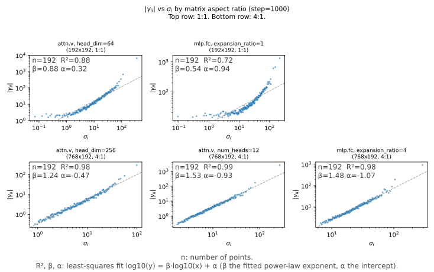
The pilot points toward aspect ratio. Once the matrices have the same shape, their curvature relationships look much more similar even when one matrix belongs to attention and the other belongs to the MLP. The 4:1 matrices show a noticeably steeper and tighter relationship than the square matrices.
This is only a small comparison, so it does not establish that matrix role is irrelevant. But it suggests a more specific hypothesis: the relationship between singular value and curvature is strongly organized by matrix aspect ratio.
We can test that hypothesis directly by varying aspect ratio over a much wider range and checking whether the same pattern appears across different model widths.
We next test this relationship systematically. We vary both the model width and the aspect ratio of the MLP up-projection matrix.
The models have widths
\[ 64,\ 128,\ 256,\ 512. \]
For each width, we vary the MLP matrix from square to increasingly rectangular shapes. The aspect ratio ranges from 1 up to 128 where the model size allows it. The two largest widths are swept only up to aspect ratio 32. Each configuration is repeated over 4 seeds.
Every model is a 1-layer transformer trained for 513 steps. Near the end of training, we profile the MLP up-projection in the same way as before. We take the SVD of Muon’s momentum signal, measure the curvature \(|\gamma_{ii}|\) along each singular mode \(D_i\), and fit
\[ \log |\gamma_{ii}| = \beta \log \sigma_i + \alpha. \]
We then ask how that fitted relationship changes as the matrix becomes less square.
Figure 14 summarizes the result. Each line corresponds to one model width. The horizontal axis is matrix aspect ratio. The three panels show different properties of the fitted relationship:
- \(R^2\) measures how closely the modes follow a power law.
- \(\beta\) is the fitted exponent. A larger \(\beta\) means curvature grows more rapidly with singular value.
- \(\alpha\) is the fitted intercept and is included for completeness.
The main quantities to watch are therefore \(R^2\) and \(\beta\): how clean the relationship becomes, and how steeply curvature grows across the singular spectrum.
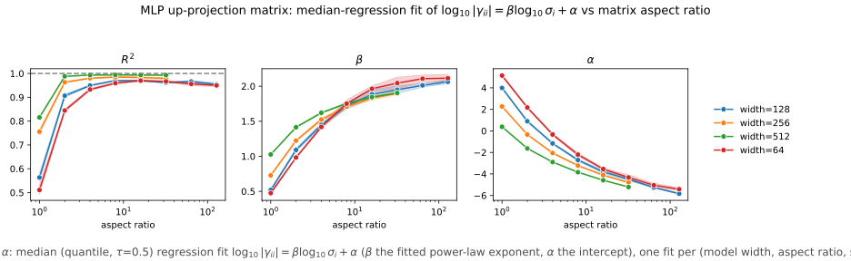
Result 4: the curvature law becomes much cleaner and steeper as the matrix becomes more rectangular.
The square case is the least regular. At aspect ratio 1, \(R^2\) ranges from about 0.51 at width 64 to 0.82 at width 512, and the fitted exponent \(\beta\) ranges from about 0.47 to 1.03. The relationship therefore depends noticeably on model width when the matrix is square.
That dependence quickly weakens as the matrix becomes more rectangular. By aspect ratio 4, every width has \(R^2 > 0.93\). From aspect ratio 8 onward, the different widths follow almost the same curve, with \(R^2\) generally between 0.95 and 0.99.
The exponent changes just as systematically. As aspect ratio increases, \(\beta\) rises and eventually approaches about 2.0 to 2.1. In other words, for sufficiently rectangular matrices we observe an approximately quadratic relationship,
\[ |\gamma_{ii}| \propto \sigma_i^2. \]
The exact square-matrix behavior still depends on model width, and this sweep only profiles the MLP up-projection. So the experiment does not show that matrix role never matters. What it does show is that aspect ratio has a strong and reproducible effect on the geometry of the singular modes.
This gives the earlier attention-versus-MLP difference a simpler interpretation. Their singular spectra were not only coming from different parts of the network. They were also probing different matrix shapes.
More broadly, a singular value does not have one universal geometric meaning across all weight matrices. The curvature associated with the singular modes depends strongly on the shape of the matrix they belong to. That matters for Muon because the same spectral rule is applied across matrices with very different shapes. Any attempt to improve that spectral weighting may therefore need to account for aspect ratio as part of the local geometry.
Conclusion
The experiments in this post leave us with three main lessons.
1. Immediate descent is not enough to judge an optimizer step.
When we switch an AdamW run to Muon, Muon can initially lose ground before eventually pulling ahead. Short Muon interventions can also leave parameter states from which later AdamW optimization behaves differently, including after the optimizer state is reset. This is why we introduced continuation value: an update can matter through what it makes possible many steps later, not only through the loss reduction it produces immediately.
2. Muon’s spectral weighting is not universally best at every parameter state and continuation horizon.
Muon uses the polar direction \(UV^\top\), which gives equal weight to the singular modes of its momentum signal. Moving away from that choice with
\[ U\Sigma^pV^\top \]
changes the later training trajectory. In our fork experiments, the relative performance of different values of \(p\) changes with both the point in training where the intervention is made and the continuation horizon used to evaluate it. The useful spectral weighting is therefore parameter-state dependent and horizon dependent in this testbed.
3. The singular modes that Muon reweights have structured local geometry.
Large-\(\sigma_i\) modes tend to have greater curvature along their own directions and stronger held-out gradient alignment. Different singular modes are only weakly coupled to one another inside their shared span after the earliest stage of training. The remaining Hessian response points outside that span through the residual directions \(Q_i\). These directions carry little systematic gradient signal but often live at a much higher curvature scale, which motivates treating them as a noise-like part of the local response.
The structured curvature relationship also depends strongly on matrix aspect ratio. As matrices become more rectangular, the relationship between \(|\gamma_{ii}|\) and \(\sigma_i\) becomes much tighter and approaches an approximately quadratic scaling.
These results fit together, but one important link is still missing. The geometry gives a concrete reason that changing the spectral weighting should matter, and it shows that different parts of the spectrum correspond to systematically different local conditions. We have not yet shown that these measurements predict which value of \(p\) will have the best continuation value at a particular parameter state or continuation horizon.
That missing link is the next question. The measurements in this post are mostly local and static, while continuation value is inherently dynamic. In Part II, we plan to model how gradient signal evolves across these singular modes during training. The goal is to ask whether that dynamics can tell us how to weight the modes for the next \(K\) optimization steps, rather than only for the next step. If it can, continuation value becomes more than an empirical observation. It becomes a possible design objective for the optimizer itself.
Acknowledgements
Thanks to Kasra Hejazi for his thoughtful feedback, ideas, and suggestions throughout this study. His input shaped many parts of the project and was genuinely invaluable.
The training loop, model architecture, and data-prep scaffolding build on Keller Jordan et al.’s modded-nanogpt, which itself descends from Andrej Karpathy’s nanoGPT and llm.c. See THIRD_PARTY_NOTICES.md in the repo root for the specific files adapted from those projects and their license notices.
Questions or related results are welcome. You can reach me at pvahidif@gmail.com